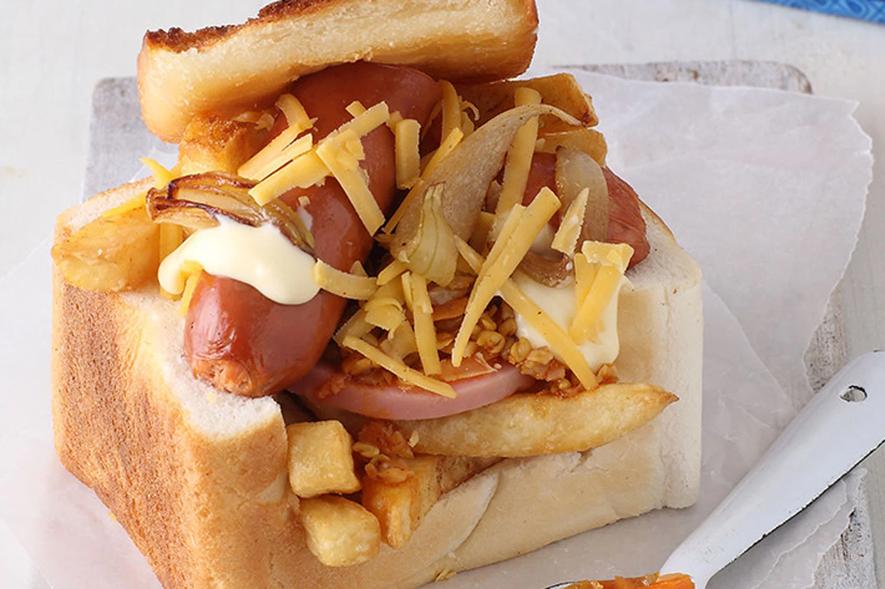

My Recipe
Chips, Polony & Cheese Bunny Chow
Ingredients
- Loaf of bread (unsliced)
- Chips/french Fries
- Cheese (grated or sliced)
- Polony, Ham or any other processed meat, of your choice
Instructions
- Cut the breaf in half, remove the inner bread, from the middle of the loaf of bread, use a knife to cut out the inner bread in a square shape
- Warm up the Chips/french fries
- Fry the polony/ ham in a saucepan, until slightly brown
- Add butter & cheese, to the loaf of bread, with the inner still removed
- Add some chips/french fries
- Add a few slices of polony/ham
- Add any sauce of your choice
- Add remainder of the cheese, chips & polony
- Add more sauce if desired
- Add the inner bread that you previously removed
